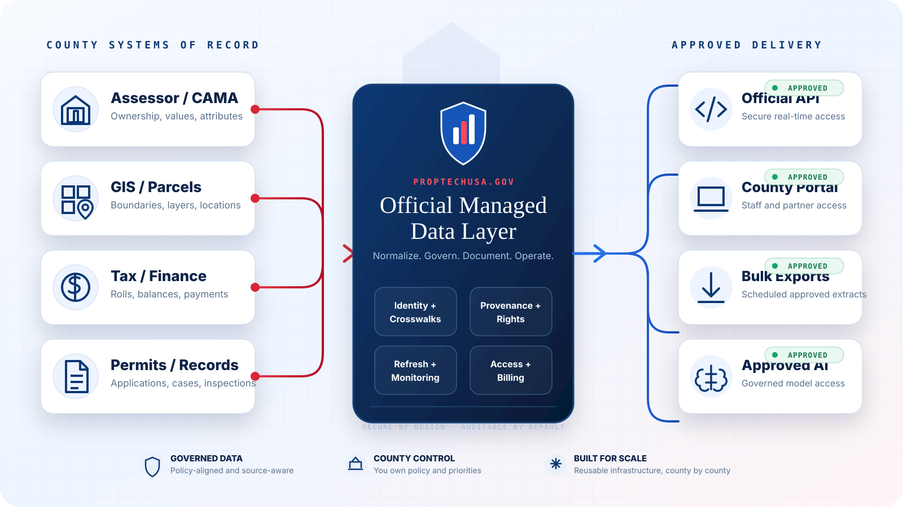

01 / REDUCE STAFF LOAD
Move repetitive fulfillment to governed self-service.
Documented APIs, approved exports and clear field definitions reduce one-off requests.
PropTechUSA helps counties turn fragmented assessor, GIS, tax, permit and public-record systems into governed digital services — without replacing the systems of record county teams already trust.

County teams repeatedly answer the same requests across websites, email, CSV exports, vendor feeds and legacy portals. We turn that repeated work into one governed service layer with documented access, monitoring and provenance.
Documented APIs, approved exports and clear field definitions reduce one-off requests.
PropTechUSA sits above existing assessor, GIS, tax and permit systems rather than forcing a rip-and-replace project.
Coverage state, provenance and refresh metadata make official records more defensible for downstream users.
We start narrowly, prove operational value, then expand by dataset and department under county-approved policy.
Scope datasets, legal authority, access rules, SLAs and success metrics.
Map identifiers, validate schemas, establish lineage and normalize delivery contracts.
Expose approved APIs, portals or scheduled exports with access controls and documentation.
Monitor freshness, usage, failures and support while expanding the service over time.
Switch between representative county endpoints to see how one governed contract carries source identity, freshness and coverage metadata alongside the record.
This calculator is illustrative, not a financial guarantee. It translates request volume into staff capacity and a modeled county-approved cost-recovery range.
ASSUMPTIONS: 12 MINUTES OF STAFF HANDLING PER REQUEST; 35–55% AUTOMATION RANGE; $1–$3 ILLUSTRATIVE MONTHLY SUBSCRIBER EQUIVALENT PER 1,000 RESIDENTS. ACTUAL FEES AND ACCESS REQUIRE COUNTY LEGAL REVIEW.
Book a 30-minute modernization briefing. We’ll review your current systems, priority datasets, delivery pain points, governance requirements and a controlled pilot path.